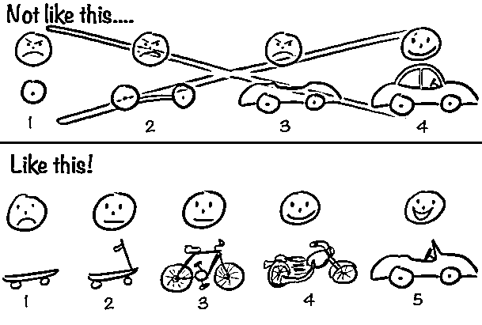

来源：https://ccav9ey9jd.feishu.cn/docx/UXrTde7leodd1XxRHXccq9zDnqh
https://shimo.im/sheets/L9kBByZxzLUy4xkK/
第二章——需求挖掘的方法
https://scys.com/view/docx/HA9gdKmiLodgznxfwCYc44GtnDf#doxcnstCxqM4YlueQcSsxkGk2Fg
亦仁老师的生财悬赏有很多需求
https://wx.zsxq.com/tags/%E9%BE%99%E7%8F%A0%E6%82%AC%E8%B5%8F/48824518525858
https://wx.zsxq.com/tags/%E7%9C%9F%E9%9C%80%E6%B1%82/88844514141542
想把网站做得好看些大家可以看看21st.dev这个网站，这是我浏览producthunt时发现的一个提供网站模版的网站，里面很多模版都是免费的，直接喂给claude就可以，这是我使用的一个对比视频，差别还是挺明显的
另一个方法：
群友制作的工具：
制作了一个iframe exctract，方便大家直接复制链接提取iframe里面的信息，支持多链接，省得找。 https://iframe-ex.netlify.app/
方法1：通过开发者工具
方法2：通过网络请求（Network面板）
方法3：通过查看页面源代码
很多人问上了后，seo进一步如何做？一个可以看看我生财的帖子，还有哥飞的。还有我这个小ppt～ https://mp.weixin.qq.com/s/J32T9IxGRSQMs4NuOdn9kw https://scys.com/articleDetail/xq_topic/1525828242248252
最好的SEO教程都免费公开了。 基础教程看下面两个：
之后进阶，可以看更多：
需求挖掘我展开说一下吧，毕竟技术可能其他教练说的很多。
用好你独有的优势：
找到那些你能够直接接触有直接体感的领域，远比那些做一些常见的类目更有价值。
小排老师的心得，值得多看几遍：
你要部署的代码，必须放在一个一直运行的电脑上，这样其他人访问你的网站时，你的程序才能够服务这个访问。
这就是Vercel的作用。它免费提供了一个一直运行的服务器，存放你的代码。
但Vercel必须能够知道去哪里可以找到你要部署的代码，所以你注册vercel账号的时候，要使用github的账号方式登录。
这样在Vercel里面选择要部署什么项目的适合，vercel才能够到github里面你的项目里面把要部署的程序找出来。
攻击目标有三点：服务器，应用，数据
攻击方式也不多：
服务器可以限制他人访问，也可以重装系统重新购买等，问题不大。应用和数据库只要备份了，很快就能重新部署。
赶海网站：
流量插件：
下拉词:
曲直的笔记记录了自己一个以为很简单其实做起来还是很有挑战的航海心得。看到其他圈友的做法，觉得好像不过如此，道理、方法和技巧很简单。但是真正自己做的时候，才发现就算是一个简单的域名购买和配置，里面都有很多的技术细节要解决，都会考验解决问题的能力。
我其实也有同样的体会。比如做流量的圈友，执行力都是拉满的。发帖就发到平台容许的最高限度。这样才会提高胜率。很多人都只是浅尝辄止，自然很难拿到结果。所以，永远不要做只会评论的看客，尽早、尽快把手弄脏。变现就是解决一个又一个的问题。包括需求挖掘也是一样，先把执行力拉满，然后再谈优化。所有项目皆如此。
锂电是技术背景吗？很快就上线了三个站，其中一个站还有160个游戏，可谓手速飞快。更难得是，能够在群里面发现其他群友开发中的问题，从而开发一个网站来专门解决他们的问题。既能发现需求，又能快速实现，这样的程序员在生财估计可以很快获得正反馈。我已经没有什么可以教的了。变现指日可待。加油~
作为懂技术的圈友，开始不建议一下尝试过于复杂的功能。可以先把手册中的项目都尝试着做一下。以我自己的例子，其实就算是手册中的项目，我自己照着做，也还是会需要解决一些手册中没有提到的问题的。
目前看AI写代码在工作量较大、代码较多的场景下，还是有点费力的。不要一开始给任务太高期望。目前我的经验是，主要的功能70%都可以快速完成，但是剩下的30%可能你会要花多得多的时间去调教。如果再加上后端以及数据库，对于AI编程工具的使用经验要求会高很多。
实在要尝试，可以让ai选择用那些前后端一体的技术方案，比如Next.js，这样可以减少AI在不同代码之间的理解，会减少一些接口上的明显错误。
刚上的游戏站流量下来，可能会是航海结束后常见的现象。毕竟，作为一个新手随意上的站，要想突然爆发，大部分时候可能要靠运气。这时候可以再继续增加站，同时考虑一下，在细节上面可以如何做迭代。
比如之前的精华帖中，教练或者其他圈友提到的方法，是不是都用到了，还是有些方法并没有尝试。又或者有没有更好的获得词的渠道。小众的流量站。重复上站不是为了上站而上站，而是争取每一次上新站都能够在方法上比上一次做得更好一点。
天辉学会了使用子域名，技术上又有了新进步。是的，有了主域名，理论上你是可以在里面放无数内容的。毕竟所有的大型网站都只是一个域名但却包罗万象对吧？
不过子域名这个有时候也是双刃剑，因为网站的内容太杂，可能会对域名的权重有影响。这就像账号一样，如果你一个账号什么内容都发，可能算法就会对它的评分不够精准。
这可能也是为什么很多工具网站一个域名只做一件事的原因。练手可以如此，长期耕耘的站，最好其子域名里面的内容有个共同的主题。这个跟做自媒体账号有点类似。
恭喜完成第一步把网站做出来并发布。对于所有的小白来说，做出第一个站应该是最兴奋的。毕竟，所有的互联网应用都是从一个域名一个网站开始的。
半暖还提到后面会多用模版，而不是让AI从零开始。这也是我最推荐大家尝试的。哪怕AI可以帮助你很容易的从零到一写个东西，但是其实这样写出来的东西，在代码质量和系统架构以及功能设计上可能会有很多的不足。
找一个现成的项目来让AI改，代码的质量可能会相对高一些，而且产品的成熟度会大一些。程序员经常说不要重复造轮子就是这一个原因。站在别人的肩膀上是前进的更好方法。
最近推特上那个著名的独立开发者用AI开发上线了一个赚钱的网站后，很快就被发现很多bug，被搞得很狼狈，所以，有时候不要让AI从零开始造轮子会是个更好的选项。毕竟很多功能和需求已经被前人开发出来了。
昨天发布上了一个发单页游戏，今天从Google search console里看，没有人点击。是的。GSC里面显示的是谷歌搜索引擎的访问量。要看全部的量，可以在网站的首页里面埋GA，Google Analytics（GA）或者其他流量访问记录的工具。这样可以看到全渠道的访问数据，不只是GSC的。
另外，发布一个站之后，访问量低或者没有访问量也是很正常的。依据竞争的程度，不排除有些站可能也是需要一段时间才会有些访问，甚至一直都没有多少流量。放平心态，坚持上，坚持学会如何更好的找词，可能会有意外之喜。
儿童游戏导航站的想法不错，可以考虑尽快做起来，不过我感觉你设计的功能可能还是太多了。我的经验是儿童游戏通常不太需要很技术或者很专业，功能也不需要很多，只要有一两个有意思的点击中小朋友就可以了。而且小朋友觉得好玩的点，很可能并不是你觉得有价值的点。
你可以观察下自己的娃对ipad里面游戏的哪个部分最喜欢，然后把它抽出来做成一个游戏。找AI协商如何实现功能也可以，不过看你的记录，AI给的功能有些过于复杂了。像家长同意、注册这些都可以不用在前期考虑。尽快实现玩的功能是第一位的。
从功能设计的角度来说，AI会倾向于给你很多的反馈，但其实开始的阶段，不需要考虑得那么完善，作为游戏，尽快把可以玩的东西做出来才是最重要的。当你跑出一个有正反馈的游戏，再把一些合规、用户留存加上去都是不晚的。
上来就挑战直接开发微信小程序，应该一看就是程序员哈。他提出了一个常见的问题，就是目前的cursor等开发工具在开发前端代码的时候比较高效，但是开发后端代码的时候经常会出现bug。
这也是我之前经常碰到的问题。一方面可能是因为后端的代码本身可能在大模型中的样本数量没有前端代码多，再一个也确实跟语料库中的官方文档有关系。增加开发系统的文档库会有帮助，但文档库可能最多只能帮助你减少api代码的误用，对于复杂功能来说，很容易在不同功能模块之间存在接口不兼容的情况。
再一个模型在一个问题上反复出错的场景也很常见，这往往是因为某个问题陷入了死循环，而AI常常习惯使用增加工具或者换一条路径的方法来解决，这时候往往容易进死胡同。
对这类问题我的建议是：采用设计驱动的开发模式。也就是说，在你开发之前，就跟AI商量和讨论一下这个系统要有哪些功能，如果后端有数据库，那最好把数据库和对应的功能都讨论清楚。不要急着写代码。讨论清楚之后，再让AI就讨论的过程形成一个设计文档。包括需求、流程、技术栈、前端和后端（尤其是数据库）的设计。这份文档应该会比一般的文档库小，因而会容易被大模型接收，不会出现输入太多导致模型幻觉或者失忆的情况。
总结了自己的几次航海的感悟。确实，有技术实现能力并不代表就能够变现哈。之前圈友说过，开发和营销的占比，其实应该是二八开。开发只占时间的两成，大部分时间都需要花在营销引流上面。因为软件领域供应其实非常充分，关键还是在于是否能够把流量做起来。加油哈。
小霸王的这个总结挺好的。作为新手，前期其实要掌握两件事，一个是技术上要快速上手；二还要学会如何选赛道选词。两个相比，其实后者更考验经验。早期的时候，可以不用太纠结希望一次搞定两个，先尝试尽快把一个站搭建起来，找到手感。因为选词是个持续和长期的活，很难短期见效，你要跑一个之后，才会有反馈，有感觉。
技术容易掌握，可以趁着航海期间教练们一直在群里答疑，快速跑通。选词这个运气和经验兼具，把它作为长期的技能去锻炼。
复盘写得很详细认真。看得出来做事情很有方法。已经上线了第一个站，说已经跑通了，是变现了么？变现了的话那要恭喜哈。
如果可以接触海外朋友，了解很多当地的文化等信息，这是个非常重要的优势。本质上，我们做站其实就是好好观察生活。你更深入的、更认真的生活，就能看到更多别人看不到的东西。你如果带着好奇心去看周围，会发现其实很多领域很多场景可能都有需求点。用好自己的独有信息渠道。
又是一个成功上线的哈。看来AI编程加持下，确实人人都可以成为AI程序员。哥飞的文章对于入门确实很有帮助。大家学会了编程之后，都可以多读一读。读完他的文章，跑通变现应该问题不大。纳瓦尔说，你如果掌握了销售、掌握了代码，你就不太需要其他人帮助了。
天辉圈友给我们演示了一下什么叫做养成系IP的变现方法。值得大家参考哈。其实做的过程，如果大家不介意开放出来，本身就是一个非常好的做IP流量和变现的思路。围观群这个打法其实适合所有非IP的普通人。在学习过程中就完成变现，这是著名的独立开发者最成功的方法之一。把你的过程开放出来，自然会吸引到感兴趣的人。我也学到了。继续加油哈。
这位群友也不知道是群里面哪个。一个小时搞完了一个站，已经很快了。各位动作快的圈友都行动力惊人。下面可以考虑把自己的站在相关的论坛、目录站做一下提交。每天提交几个收录地址。既然做出来了，就继续学习下SEO。还可以像mls2009一样，尝试多上几个不同类型的站，现在航海中把不同站的技术路线跑通。
提到上外链的问题。这一块目前没有什么高效的方法，要么是花钱买服务，比如有网站是可以一次性购买服务，让它帮你提交到多个网站的。要么就是自己每天人肉提交。 下面这几个网站对怎么做反链会有些帮助，供参考：
另外，多积累一些各大论坛的账号，很有用，作为基建可以早做。
月溪提到了目前氛围编程的常见问题，AI修改如果没有给它强约束，会很容易放飞自己。所以好的做法还是前期跟AI多轮对话，生成一个产品说明文件，把功能、UI、技术栈都固定下来。并在与AI对话过程中限制。 功能多的网站尤其需要如此。一句话写贪吃蛇的体验只适合功能简单的场景。 AI很多时候是帮你把功能糊出来了，但也可能里面有很多坑。 产品一旦变现了，就要上强度，学习一下用到的技术，否则流量来了接不住可就亏大了。
木白如果一直考虑上导航站，可以在设计把代码架构优化一下。比如在AI写代码的时候，要求把界面、数据分开，这样以后要设计不同的导航站，只要把数据文件替换一下就可以。 这样可以复用一套代码模板，应该可以提高上站的速度。 复用、数据和界面分隔等都是编程的基本思想理念，可以了解下，对提高代码质量和效率等都会有帮助。 @月溪 月溪也可以参考木白的这个方法，让AI把开发步骤固定下来，这样可以控制AI的行为，减少不可预期的修改。
提到了四五个需求，看得出来还是在计划阶段，尚未实操，要加油了。看目前总结的需求，感觉任务分的还是比较粗，可以把颗粒度再想的细一点，同时计划要有可衡量的结果。比如今天要在github或者谷歌上找到10个休闲棋牌。而不是说去完成搜索这个动作。 需求方面，一开始不要想着通用模板，做四五个站有了感觉之后再考虑的通用模板可能才真正通用。在没有上足够站之前，通用末班的需求很可能是伪需求。包括多语言界面，为什么是英中德法意？这后面有市场调查的支持么？想得太多可能会导致行动力不足。
终于完成了工具导航站的制作开发，恭喜。 程序开发过程中，往往是一些细枝末节的问题，像你遇到的这种logo不全的问题会占用大量时间，这很常见，有耐心解决说明你比较适合做这个。 目前的Vibe编程在让AI精确的实现自己想要的东西方面，可能大部分人都会遇到多轮对话仍然AI不理解的问题。 一方面，大家可以尝试学习如何精确的表达需求。另一方面，也可以尝试把一些示例用图片或者代码的方式发给AI，让它学习。或者使用其他的编码工具完成一部分界面设计或者需求设计，然后让cursor完成代码。 工具是死的，人是活的。
做什么比怎么做其实重要得多。需求挖掘，就跟做内容的选题一样，我觉得是最重要的决定。 差的网站，在好的赛道，一样可以拿到更好的结果。 所以学会了技能千万不要反而被技能限制。编程是满足用户需求的手段，不是唯一的手段。 另外，如果spaceship一直无法买，可以换一个地方买。就像亦仁说的，不要尝试解决难题，可以绕过难题。毕竟创业不是考试。时间成本很重要。
把谷歌广告等都注册完是很重要的里程碑。恭喜。看地址在美国，应该账号准备这些天然的有优势啊。 如果遇到AI多轮错误的时候，可以考虑是不是限制条件和开发步骤没有明确。一般情况下，如果需求讨论的比较清楚，且要求的开发步骤明确下来之后，AI的乱修改会好很多。 另外，如果一个问题对话多轮搞不定，很可能是遇到了某个技术点比较小众，这时候不必纠结一定要用AI，尝试换个推理更强的模型比如chatgpt，或者甚至学会用google。有时候反而可以解决问题。 AI不会拒绝人，但多轮对话都无法解决的时候，很可能就是因为进了死胡同。反复尝试有时候是在浪费token。 或者引入了更多的技术package，带来更大的复杂性，把项目改的面目全非。 在项目前期需求的阶段，最好就可以和AI讨论下，看看自己的技术实现是否有成熟的网站参考 大家是新手，可能对很多技术适合做什么缺乏经验，但程序员就习以为常。 这样在需求阶段多问问此类网站的技术栈以及相关的开源项目，可能可以减少后续的风险。 我的经验是仍然会有一些小众问题，可能需要结合google搜索解决 总之善用搜索哈，这是程序员极其重要的基础能力。
走通了域名的设置，这是实质性进展，恭喜。
从往期航海看，即使航海结束，在航海群里面大家还是可以讨论的，只是可能没那么快有响应。因为教练可能就会因为群太多，往往就会把之前的航海群取消提醒。一般群内还是可以有答疑的，除了教练，也有群偶尔会有其他热心的圈友回答的。
为了加快学习速度，抓紧在航海期间尽快尝试航海手册中的任务，跟上大部队，这是最有效的。
介绍了一个可以在线生成合规隐私政策页的在线网站，大家可以参考下。
https://www.privacypolicygenerator.info/
围绕着航海过程中的需求做功能其实是一个不错的产品思路，大家也可以借鉴。
阿江的网站已经有收入了，是这次航海才开始建的站么？一万块也是从一块钱开始的，恭喜呀。
找到了一个1万UV的工具站需求并已经注册了域名准备抢词。速度是个优势，抢词就是抢热点，适合执行力强的圈友，应该也是能够快速出结果的。继续加油。
练习了教练指导的从差评中找灵感的找需求方法。应用商城里面的评价，有多少是真实的，谁会专门去应用商城里面做评价，这个可以再思考下。我的建议是，去真人多的地方。哪里真人多？想想你自己平时都在哪里多。
从日志可以看出来，木白的上站SOP已经很顺了。在哪里找词，找到词后如何分析竞品，如何综合使用Grok、V0，Trae，如何配置不同的数据分析工具。
大家如果跑通了也可以一起看看他的日志，看看有没有自己的卡点在他那里是用另一种方法解决的。
每个人可能都会有自己的工具喜好，但并不妨碍你去看看别人怎么做的。优化和迭代都需要我们有空杯的心态。
我看圈友的很多做法也学习到了不少。
8个小时上一个站我感觉速度已经很快了，反正比我厉害，但应该还有优化挖潜空间，因为我看过更短的，哈哈，卷无止境，加油。
表示上站三个之后不需要看手册了，那就说明能力已经快内化了，恭喜。
技能这东西就是唯手熟尔。女站长不多，可以多观察下自己姐妹淘在玩什么游戏，喜欢什么东西，说不定差异化的内容就在自己身边。利用好自己的性别优势，不需要跟其他直男程序员抢热词哈。
还在看手册吗？还是要快点动手呀。航海手册其实写得很详细，照着做就好。放低预期，不要想着做成，抱着学习技能的心态，而不是发展兴趣爱好的心态。
准备不是进展，学习也不是进展，行动才是进展。
把每天的计划改一下，颗粒度细一点，明确一点。比如看完导航站，然后完成域名注册。
莽撞中开始，好过完美的计划。
你是想说加外链很多奇技淫巧吧（你写的是奇淫技巧[呲牙]）
[呲牙]加外链确实是技巧很多。假装回复别人，然后引用自己的链接这个是常见操作了。有时候生财的群里面也有。
阮一峰的链接质量应该还挺高，毕竟做了很多年。关键是他收录好像还免费。类似这样的外链其实也有很多，再找找。
另外，也可以利用一些爬虫，故意把链接放在爬虫可以爬取的地方，让它们帮你传播。
总之这一块技巧非常多，很多都是独家方法，一般也不会免费传播，可以慢慢学慢慢试。
是的。真正的卡点从来都不是把东西做出来，而是有没有对齐需求。这也是为什么程序员很多，但是很多仍然需要找一份工作才能够养活自己。
找需求本身就是一个很关键的能力，生财里面有很多这样的方法。
如果大家都知道这个道理，会给社会节约很多资源。如果不知道从哪里开始获客，就学学其他航海里面怎么做流量。逻辑是一样的。
在生财里面的开发和程序员很多，其实大家学会了技术本身就是一个优势，你带着技术优势进来，再学会了如何找到需求，这样生意就在你一个人身上闭环了。
未来可能很多人都是个体户，学会利用代码+流量杠杆，你们已经比其他人领先很多了。
除非想要逼自己一把给自己加压力，开海外公司建议新手前期都不要考虑。
前期用一些个人可以快速注册使用的方式比如LemonSqueezy之类就行了。像注册公司之类的基建都不需要太提前，让它成为一个顺水推舟的事情。
"未来可能会用到"是一种增加负担的思维。
真要用到的时候再做一定来得及。
专注把手上现在这个任务做完。
尝试使用MCP和爬虫技术花了不少时间。
目前MCP工具还在快速迭代和演进中。MCP的底层还是基础的开发工具和技能的调用，没有一定的开发经验的话用MCP可能会增加问题解决的难度。且MCP因为才出来，AI解决相关问题的能力可能都不具备。
上站需要的技术在航海手册中基本上都够用了。大家可以不用太求新哈。
爬虫技术可以多学习，这个看起来是目前做互联网最有价值的技能之一。
新手的话，建议还是从基础的和简单的工具上手用熟开始。
互联网的技术好像乐高积木，你底下的学会了，并不耽误上面的工具的使用
但是只学上面的，就肯定不太够哈。
ghibli火了以后第一反应就是去上站，执行力不错。抢热点虽然竞争很激烈，但确实也是百试不爽的方法。
木白也分享了下目前除了gpt 4o之后其他模型的生成吉卜力图像的能力，大家可以参考下。
由于版权问题，昨天OpenAI已经下架了直接生成吉卜力图片的能力，这也是抢热点可能会面临的风险之一哈。
至于是先上站还是先把登录、后台和支付这些搞定，倒不是太大问题。可以在上完站之后再考虑做。因为抢热点的话，速度是第一位的。流量来了再做一定也不会晚。
或者学一下其他个人开发者的做法，做个AI Saas starter package。每次新需求类型来了以后，只要改改业务端逻辑就可以。
小等犯的这个新手错误，一次性想要把导入两百多个游戏的iframe，批量导入网站，结果发现这些游戏的内容都没有准备好。
这很正常，不止新手会犯，老手也不见得完全避免。在还没有开始的时候，就某个单点过度优化。
比如用工具，一开始就想要找个最好的，找了四五个工具之后，发现各有各的好，反而不知道该选哪个了，决策瘫痪，而行动一个也没有。
一开始的时候，就用所有你现在知道的东西，尽快的做一个可以用的原型出来。这是最快的方案。
就比如说，你要寄一百封信，最佳方案不是一次性把100封信的信封写好，而是先完成一封信，然后再在下一封信上考虑升级信封邮票或者书写风格。
因为如果你一次性把一百封信的信封写好后，你如果发现信封写错了，修改的成本和损失是巨大的。
关键是小步试错、快速迭代。这是小团队的优势。
用最小的努力完成一个使用闭环

新柳发现了在youtube做游戏直播推广可以获得很好的流量增长。
确实是的呢，如果你对选的词有一定的信心，可以尝试着做一下流量推广，看看效果。总之就是小步投入试试水，如果正反馈可以，再加大投入。
另外，可以考虑一鱼多吃，结合一些内容生产的技巧。比如直播的同时也做录像。录好了之后可以再发视频，这样可以增加内容的曝光。
另外，可以再想想你的用户主要在哪里，谁会玩，然后去用户在的地方做内容，可能效果会更好。
上github上找游戏虽然可能可以解决版权的问题，但github本质上是一个各种类型软件的集合。上面的游戏，种类太多了，加上编程技术本身也有很多门牌。新手如果不会技术，做起来有一定技术门槛，这可能也是没有最后被列入航海手册的原因吧。
iframe嵌入html5可能是最简单的上线方法之一了。
新手一开始严格按照航海手册操作，比如先上10个站。
有了正反馈再花时间学点基础技术，会比较容易坚持。
另外前期不需要太考虑美观问题。美观与否并不是游戏站价值的核心。
最后这一点可能很多人不同意，你们可以多试试
自己的网站日访问量达到了5342，恭喜。是前几天上的那个游戏站么？
几天就能做到这个数字，在航海里面很突出了。
AI图片站是刚需且需求量巨大，哪怕是红海，小众垂直一样有机会。
不过如果你现在的站流量都是来自SEO，且增长迅速，可以考虑投入多一点时间在目前这个站上面，参考生财里面的思路，把网站的内容体系、外链等坚持做一下。
在有时间的情况下再上新站，也许会更快获得变现结果。
嘉亮在上了3个站之后不知道该继续做什么。
可能这是绝大多数人都会遇到的问题。如何在没有正反馈的情况下继续坚持
建议多读一下航海手册。
“先上线一百个网站”
“在我赚到10万美金之前，我的信念就是先上线一百个网站再说”
我今天看航海手册这里的时候，还是觉得很有感触。
所有的项目都需要通过量的积累，才能达到质的变化。
这两句话类似的意思其实大家如果留意，在所有的项目里面都有类似的意思。
这必然是前人的经验总结。
本质上就是坚持+概率。通过坚持，增加样本数量，通过迭代，提高基础概率，最终提高整体的成功率。
绝大部分生财的项目逻辑皆是如此。
最终成功，一定不是因为你有技能，而是你有信念。
天辉的复盘很值得大家看一看，很坦白也很直接。
虽然他已经上了9个站，但复盘下来，手册中建议要做的事情很多都没有做。比如提交外链、比如上站模板的准备、比如看榜单、看竞品。第二阶段的事情有很多，也不是一天两天做的完的。
任何赛道赚钱会分为四个阶段。
第一阶段，找到要做什么。
第二阶段，学会技能，要怎么做。
第三阶段，技能很不错了，学会赚到第一块钱。
第四阶段，学会把赚到的第一块钱放大。
航海主要是希望能够解决大家的第一和第二阶段的问题。能够在第三阶段赚到钱，往往是因为在此之前已经积累了很多技能积木了。
所以，关注自己的进步即可，排名和其他人的成绩只是供你参考和学习，能借鉴的就借鉴。
每个人的节奏都不一样。既不必焦虑，也不必自满。把上站变成一个习惯，可能哪天结果就自然来了。
未央的纠结很典型，也很有代表性。
"墨迹了好多天 最小mvp还没跑完上线 老琢磨那些产品功能问题"。其实自己也知道问题，但就是没法动作。
比如今天打卡谈到的收费问题，其实是一个典型的第二阶段问题。你的网站如果都没有上，你怎么知道会有流量呢？核心词有流量和你的网站会有流量是两回事。
没有做过产品的技术人其实也会犯这种错误。担心自己的产品撑不住用户量，担心某个代码写得不够强大，会容易崩。担心某个实现不够安全，会被人攻击。
其实，这些都是想象。绝大多数情况下，我们面对的问题其实不是流量爆掉，不是被安全攻击，不是同行抄袭，而是......无人问津。
所以，别想太多，要加支付，你挂个微信二维码也可以收款。收外币？挂个paypal也行。
收款为什么放在最后一个章节，那是因为可能大部分人在航海期间都不需要了解
真需要了解的时候，网上、油管有很多攻略
再看看我周一发的图。
迭代的逻辑首先是要让滑板车能够跑。而不是想着设计一个完美的轮子。
复盘强调要调整预期。
是的。航海的目标就是掌握基本操作。
找词、买域名、上站。每一步都熟悉。工具、模板、账号都随手就用。
除非之前有积累，新手不要想着能够在短短的21天就完成变现甚至爆发。
航海的一千人里面，按概率，最多可能有几个人能够有这样的运气。
没有反馈是常态。降低预期，看看自己的技能是不是掌握了，这才是航海的目标。
当你把上站从规定动作变成自然动作，可能自然而然的流量就有了。
我们的大脑是需要重复很多次才能把动作变成肌肉记忆
持续练习，不下牌桌就有机会。
图片站上线，恭喜。
航海里面介绍的好几个类型的站，其实覆盖范围还是挺广的。
游戏、目录站和工具站每个领域都有很多机会，都值得深耕。
如果上站的数量达到一定程度，可以选择自己感兴趣的方向深耕。
如果暂时没有找到感兴趣想深挖的，可以扩展一下范围，看看其他的方向有什么想做的。
尤其是需求端。或者读一读航海手册中引用的精华帖，看看哪些任务自己可以再尝试做一做的。
给自己一点时间，一步步迭代。
芸豆提出了一个非IT从业可能都会面临的普遍性问题，就是你一点技术不会，一点IT知识都没有，怎么让AI帮你写出你想要的功能。
对标当然是一个非常好的方法。可以多用。
但对标直接解决界面问题，无法解决程序逻辑的问题。
给一个建议，大家可以像聊天一样跟AI沟通讨论需求，不要上来就写代码。而是先把它当成IT专家，跟它讨论一下你想要做的东西。问问它你描述的需求是否明确。
这比你上来就让它写代码会效果好很多。所谓磨刀不误砍柴工。
比如，你可以用下面的prompt：
我想要跟你讨论一下我要做的一个xxx网站的功能。这个网站xxxxx。你觉得这个需求怎么样？有什么问题？
你可以跟任何一个推理能力足够的大语言模型先讨论一番
AI会把你需求中含糊的部分、它理解的需求都会格式化的列给你，这样你再给它反馈，纠正
这样几轮下来之后，它把你的需求理解的差不多了，你就可以让它输出一个PRD（产品需求文档）。
然后你再让AI基于PRD帮你生成代码
这会极大的减少AI代码的随意性和不可预测性。
尤其是在一些代码交互比较复杂而用户对于如何表述需求不是特别清晰的时候。
后面熟悉了后，你还可以让AI先给你推荐技术栈。
总之，软件开发过程本身就是一个计划、实现和测试的过程。为什么会有这几步都是有原因的。不要像菜鸟程序员，上来就写代码。这样的代码哪怕写好了，可能也是漏洞很多，或者后期要大改。
目前来看，在修改阶段AI的代码能力是明显下降的
可以看到他每天的日志都会有一些新的启发。每天行动上也有产出。作为技术人，可能首先是要把眼界打开，看到例子。然后持续实践，做出结果只是时间问题。继续加油[强]
图片站产生收益了。虽然只有2美元，但是已经是质的突破。恭喜！看他的航海日志就可以看得出来他的迭代过程。从外链提交的脚本化，到看到关键词之后的迅速上站，新手的问题都会一个个经历。一次性提交外链的工具可能帮了不少忙。毕竟重复的事情做很多，产生厌烦是正常的。所以大家也要记得，你的工具也可以帮你提效，不要觉得做出来的站才是目标。这个上站的过程才是航海的目标。其他圈友也可以看看，哪怕是技术人做这个项目，也很挑战心态。而小白还要解决部分技术问题，所以保持正确的心态很关键。至于内容站的质量问题，你可以看看谷歌官方对于什么是网站内容评分的文档。
出海有很多基建要准备。如果刚刚开始，遇到账号、邮箱、支付等问题是很正常的。如果你说的卡是用来海外付款的，应该是不需要海外卡的。国内很多银行的外币卡应该都可以满足需求，不需要去香港。如果说的是收款，不建议短期内考虑这个问题，先把流量的问题搞定先。
尝试用AI写kgma在线转MP3代码，一晚上没搞定。我之前说过不要老是想着要解决技术问题，首先看看能不能绕过去。你的这个需求，我搜了下，github有源码项目，你看看行不行。https://github.com/ghtz08/kugou-kgm-decoder 如果一个问题一两个小时没搞定，很可能就超出现在的技术能力了，想办法绕过去。不然很快一天就过去了呢，编程这事情很上头，一下子时间就过得飞快。
发现了一个Adsense之外变现的路子。国外其实变现的方式有很多，除了adsense，还有很多其他的变现广告联盟之类，可以多发掘一下。生财的精华帖里面也有很多介绍。善用搜索可以发现很多。内容站和工具站的变现方法挺多的。流量上来之后可能还会有人主动找上门。先搞定流量吧，看得太多会容易把心思看花。
对 Google Ads 审核中“网站质量”相关的评估标准不太清晰的话，谷歌的内容质量审核是有参考文档的。看看官方文档，这是最权威的资料。https://developers.google.com/search/docs/fundamentals/creating-helpful-content?hl=zh-cn 好像也有很多工具是可以帮你做audit的。搜一搜挺多。
提到不在那个行业，如果要针对那个行业的某一个工种/职业去做工具，需要对这个行业痛点比较了解。所以我们只能做个小工具，解决个小痛点。 这个对也不对。应该说做小工具是我们的选择，也是我们的方法。个人开发者，不要想着解决大痛点。一来大痛点可能根本上就是无解，是由社会、人性等问题造成的，比如有的人就是不愿意学习或者尝试。二来，关注的问题太大，我们会失去焦点，找不到用户真正在意的地方。你网站有100个功能，你就搞不清楚用户是因为哪个功能才来的。因为功能之间可能还有依赖关系。这会让你的分析复杂化。第三，我们的资源和能力都是有限的，做个大工具试错成本太高，很可能得不偿失。至于对于行业痛点的了解，也不需要想的太复杂，其实多跟用户待在一块就可以知道。用户会不厌其烦的告诉你的。而如果你找不到这样的用户，你可能就要想一想，为什么你要做这个行业的客户，他们是不是你当下最佳的选择。
拾壹看toolify，发现有很多站是特定语言国家的，流量也很大。是的呢。互联网上的站点数量非常非常非常多。我们上网久了也会发现，经常有个站在某个领域有上千万用户但我从来没听过，找需求其实是个不断发现新领域、打开认知的过程，很好玩的。保持开放心态，继续尝试吧。
给网站增加了谷歌校验登陆功能，且用cloudflare R2的存储桶存了用户上传的图片。都是用AI搞定的，说明学习能力很强。你用的CloudFlare R2存储桶，记得留意下。CloudFlare R2虽然好像有免费存储额度，但好像会收一个infrequent access的操作门槛费，大概是9块多美元。很多人以为容量免费，就不仔细看条款。开通服务的时候要注意，不然突然收到账单就很懵了。
关于supabase的登陆问题。Supabase 的 JavaScript 客户端库默认会把访问supabase的权限token存在你浏览器的localstorage中（在你成功登陆后）。要存在cookie中的表述可能不太准确，如果这样发给AI可能还会导向复杂的方向。supabase为了安全默认是不使用cookie存储token的，（cookie很容易被浏览器插件查看和盗用，所以不是安全的密钥保管方式）。你如果调用的是supabase的接口，它会自动把token添加到http请求的参数（好像是Authorization）中去实现的。关于442的时间分配，不必僵化理解。新手开始的时候，可能选词、开发和做链都需要花时间。所以如果真的希望把做站作为持续的事情，掌握越多的底层实现是越好的。但技术了解的深度是以现在马上用为前提，而不是完全不管技术，又或者提前学很多用不上的技术。之前我见过有的圈友列了十几本技术书清单准备全部看完，那是大可不必。但关键链路上的技术，你了解的越多当然是越好的。
考虑希望批量做SEO界面。这里我感觉可能先做出一个有效的页面之后，再考虑批量会比较好。SEO的目标还是要给流量创造价值，谷歌的算法还是非常有效的。做垃圾内容站我觉得不一定是个好的方向，尤其是新手。其他教练如果对SEO比较有经验的也可以给些意见。
木有的这个做法我觉得挺好。其实就是要看词。多看才会有感觉。看多了就会提炼出规律。我记得美团的王慧文说过，他每天上班的主要事情就是看数据。每个城市的运营数据。看多了就可以看出规律。圈友可以尝试用AI来总结，但AI的建议最终还是要人来做判断。另外一个小建议，看词之后，如果能够把看词的发现做个记录，也是一种成果。只是看可能还是不太够。因为看只是输入，有一个输出才会完成闭环。
把Git的使用入门看完了。这也是很好的做法。git是非常关键的工具，如果基本用法都不掌握，会浪费很多时间。就像前面说的，在必须要用的工具上面投入时间是有价值的。其他还有比如HTTP的基本原理（有本日本人的图示书可以参考）基本上所有网站和app都是基于这个协议的。有需要的时候作为参考书翻一翻，会对做站有很多帮助。最起码出问题知道怎么排查。
茂茂昨天了解了sitemap和robots等用途。看她的日志觉得她节奏挺好。不是一次性完成所有，而是每次做一点，每天有点进步。每个人都有自己的节奏，只要每天了解多一些，日拱一卒，就是进步。
网站访问量有两百多，如果持续的话，也是很好的开始了。看日志觉得心态也不错。英文内容站可能对很多国内技术人都有些挑战，毕竟不是母语。我觉得要么就不要纠结做内容站，可以尝试工具站或者游戏站等。毕竟补短板不知道啥时候可以补完，快点利用自己的优势做出正反馈是最重要的。仅供参考。从这几天的日志可以看到，大家最初的兴奋已经过了。已经进入了平静期。对这个项目的难度也有了一手的体会。这时候往往会发生两件事。1.部分人会觉得不适合自己。2.极少数人会继续坚持。很显然，第二种人会容易拿到结果（不会是100%）。但这次航海起码让大家掌握了几种类型的独立站搭建的全流程。希望大家把握最后几天的时间，把航海手册的项目跑通，毕竟掌握的技能是自己的。说不定哪天，这个技能就能派上用场。航海就是个拼图，每次航海都会帮你收获一个小块，持续下去你可能就会拼成一个完整的SOP。关键是你要持续拼。
限定词：我会给你一个文件，分析内容，并将其转化为美观漂亮的中文可视化网页：
请根据上传文件的内容类型（文档、数据、图片等），创建最适合展示该内容的可视化网页。